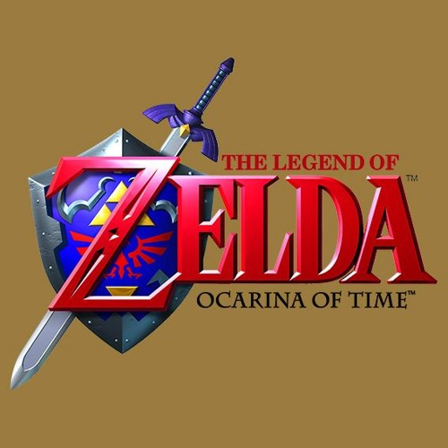

Ocarina of Time brachte die Serie in die 3D-Ära und erfand viele Mechaniken, die zu Standards in 3D-Action-Adventures wurden: dynamische Kamera, Z-Targeting und eine filmische Erzählweise. Die Verbindung von Musik, Rätseln und Kampf machte es zu einem Meilenstein des Mediums.
| Titel | The Legend of Zelda: Ocarina of Time |
| Veröffentlichung | 21. November 1998 (JP); 23. Nov. 1998 (NA) |
| Plattform | N64 |
| Entwickler | Nintendo EAD |
| Produzent | Shigeru Miyamoto |
| Komponist | Koji Kondo |
Inhaltlich setzt Ocarina of Time auf eine starke 3D-Adaption klassischer Zelda-Elemente: offenes Erkunden, komplexe Dungeons, aber erstmals in voll dreidimensionaler Welt. Schlüsselmechaniken: Z-Targeting (kontextsensitives Fokussieren), Item-basierte Rätsel in 3D-Räumen, Kind/Erwachsenen-Zeitwechsel als narrative und spielerische Trennung, sowie musikalisch gesteuerte Rätsel (Okarina-Songs). Dungeons bieten vertikale Ebenen, interaktive Bossarenen und Umgebungsrätsel, die größtenteils auf Physik/Plattforming basieren. Die Story ist ein Hero’s Journey-Epos mit deutlich filmischer Inszenierung; die Kombination aus Musik, Rätsel, Dungeons und präzisem Kampfsystem definiert das moderne 3D-Action-Adventure.